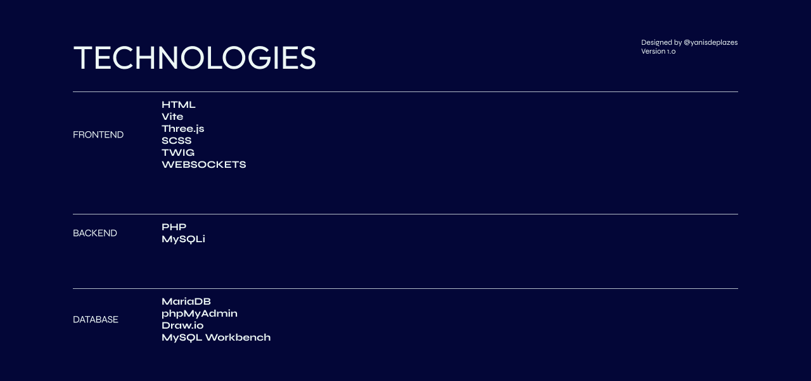

Technical Documentation
Technologies

Frontend
- HTML – Structuring the web page.
- Vite – Fast development server and build tool for frontend assets.
- Three.js – Rendering 3D content interactively.
- SCSS – Styling with modular and reusable CSS components.
- TWIG – PHP Templating engine for modular and dynamic HTML.
- Websockets - Allowing Real-time communication with Embedded devices.
Backend
- PHP – Server-side scripting for handling API requests.
- MySQLi – PHP extension for interacting with the database.
Database
- MariaDB as the relational database.
- phpMyAdmin for database management.
- Draw.io for ERD diagram concept.
- MySQL Workbench for designing the database schema.
Considerations
While Express.js was considered for the backend due to its popularity and ease of maintenance, the decision was made to follow the specifications from the project rubric. However, using Express.js could be a potential optimization for future improvements.
Problems Encountered & Solutions
Cross-Origin Requests (CORS)
Problem: Frontend could not fetch data from the backend due to CORS restrictions. Solution: Configured appropriate CORS headers to allow secure communication.
Considerations & Contemporary Web Development Practices
Performance Optimization
- Minimized API response times by using ATOMIC POST Requests. (/reading-with-sensordata)
- Used Vite to reduce frontend build times.
Security Best Practices
- Used environment variables to store sensitive credentials.
- Restricted CORS access to prevent unauthorized requests.
Scalability
- Modular MVC structure allows easy extension.
- Singleton pattern ensures efficient database handling.
Custom NGINX Setup
The NGINX configuration clearly separates production and development environments:
Production (localhost)
- Serves compiled static site that was generated from Twig.
- Serves compiled static CSS that was generated from Vite.
- Serves compiled static JS that was generated from Vite.
- Handles
/api/routes with PHP and proxies external requests. - Integrates
ngx_http_push_stream_modulefor WebSocket support.
Development (dev.localhost)
- Provides development URL for testing.
- Hot reload thanks to Vite dev server (
iot-vite:5173). - Twig templates are rendered dynamically using
index.php. - Development environment for API and database testing.
API Reference
- API Documentation: API Reference